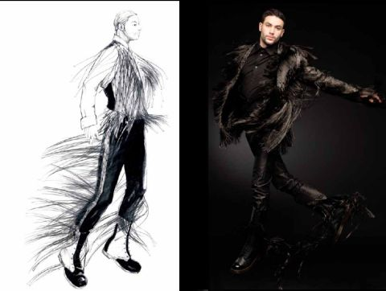
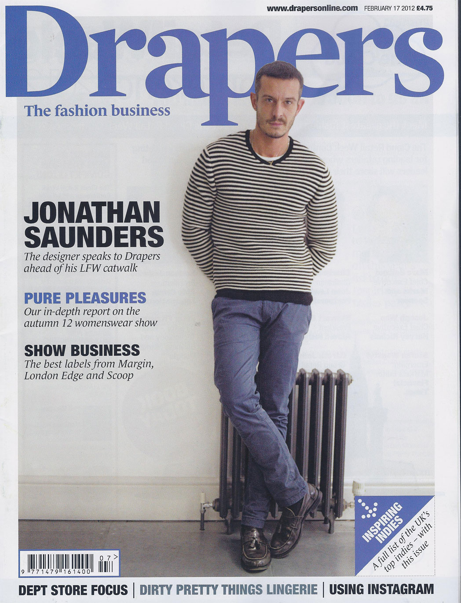

()
BA Runway 2008
Presentation of Graduate collections to press and fashion industry at the Royal Academy of Arts.
MA Runway 2009

Presentation of Post-Graduate collections to press and fashion industry at the Raphael Gallery, Victoria & Albert Museum.
MA Fashion Award, 2009
British designers and creatives are renowned for their ability to set the global fashion agenda. Each year the British Fashion Awards celebrates their creativity and success. Established in 1989, the British Fashion Awards was born from the British Fashion Council’s then five-year-old Designer of the Year Award. For more than 20 years, the British Fashion Awards has been celebrating the contributions of British designers, creatives and models to the international fashion scene. Dimitri was 1 of 5 designers to receive the prestigous award.
Deutchbank Award, 2010

Presentation of Post-Graduate collections to press and fashion industry at the Raphael Gallery, Victoria & Albert Museum.
Editorial, VOGUE.com, 2010

Dimitri won Collection of the Year, the first menswear collection to do so, with his unique take on men’s tailoring. It included half-suits mixed with mesh-draped panels which had a sporty feel about them in a vibrant palette of pink, green and blue.

Editorial, Drapers, 2011
Featured as one of the top menswear designer graduates to watch. Drapers highlighted London as the hot spot for design pools. Full feature can be found on line.